[故事简介]：5位来自美国和澳大利亚的飞行员，平均年龄超过71岁，驾驶着一架机龄72岁的C-47运输机（驼峰航线的主要机型），长途跋涉10478多公里，历时97天，飞越6个国家，从澳洲飞抵桂林；他们在无导航设备仅凭肉眼人工驾驶的情况下，飞越喜马拉雅山脉，成功重飞“驼峰航线”。原计划整个行程耗时八天左右，可意外接二连三地发生：在海上遭遇左侧发动机故障紧急迫降印度尼西亚，喜⻢拉雅上空失联半小时，着陆昆明机场前15分右侧发动机熄火…… 是五位飞行员老爷子的勇敢和坚持以及高超的驾驶技术，让这场本不可能实现的旅程成为了现实。
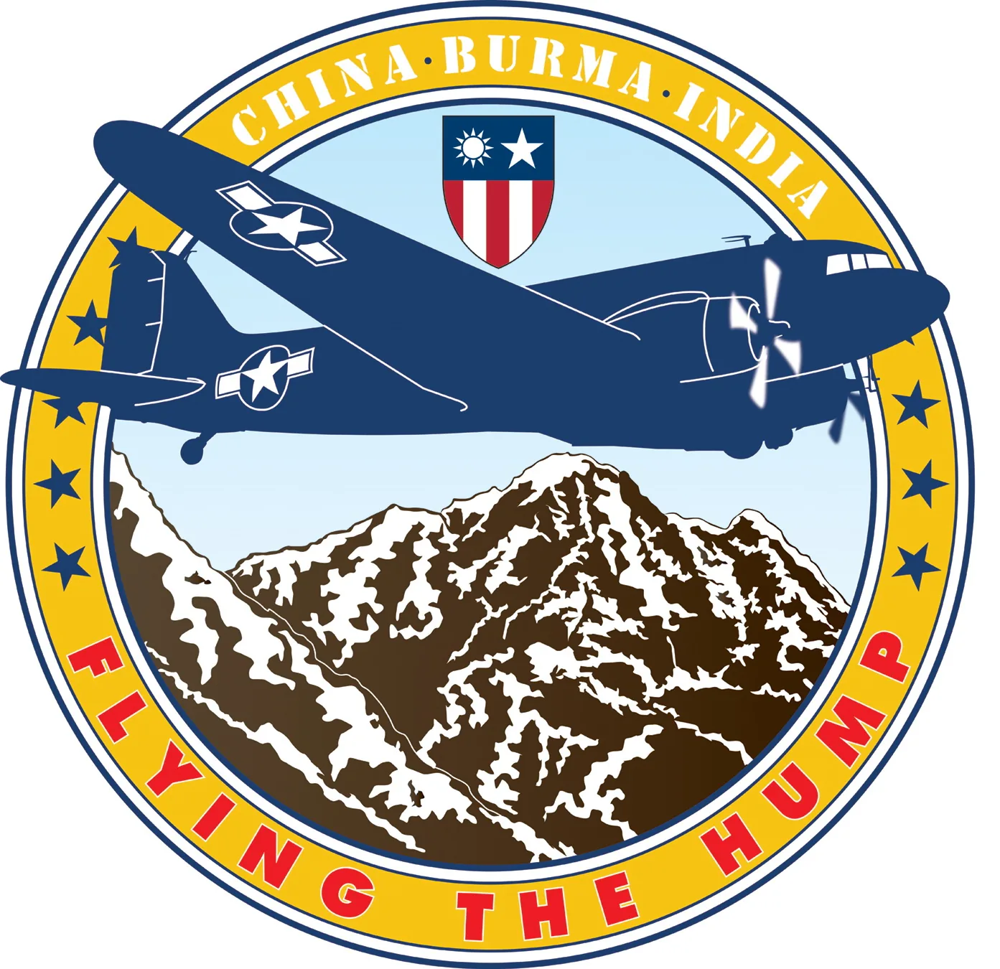
前言
During World War II, 600 Allied Aircraft were lost crossing the Himalayas to supply the Flying Tigers in China. Japan controlled the entire coast of China, Philippines, Indonesia, Singapore, Malaysia, Thailand, and then Burma. With the loss of the Burma Road, "Flying the Hump" was the only option to re-supply the forces fighting the Japanese from within China. This was one of the most dangerous flying routes at the time. The DC-3 and C-47 aircraft were the primary aircraft tasked with this operation.
第二次世界大战期间，日本控制了远东战区的整个海岸线，从中国、菲律宾、印度尼西亚、新加坡、马来西亚、泰国和缅甸。滇缅公路被切断后，驼峰航线成为补给中国抗日的唯一选择。这是整个二战期间最危险的飞行路线之一，一共有约600架盟军飞机在穿越喜马拉雅山时坠落。 DC-3和C-47飞机是执飞驼峰的主要机型。
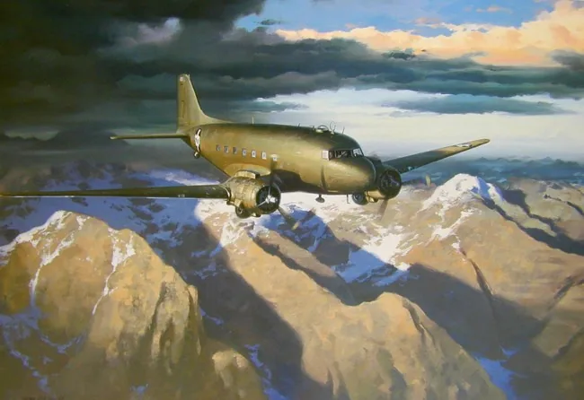
"Over the Top of the World" by Roy Grinnell is used with permission of Roy Grinnell and the Sino-American Aviation Heritage Foundation Roy Grinnell 的油画 “在世界之巅”经Roy Grinnell和中美航空传统基金会许可使用
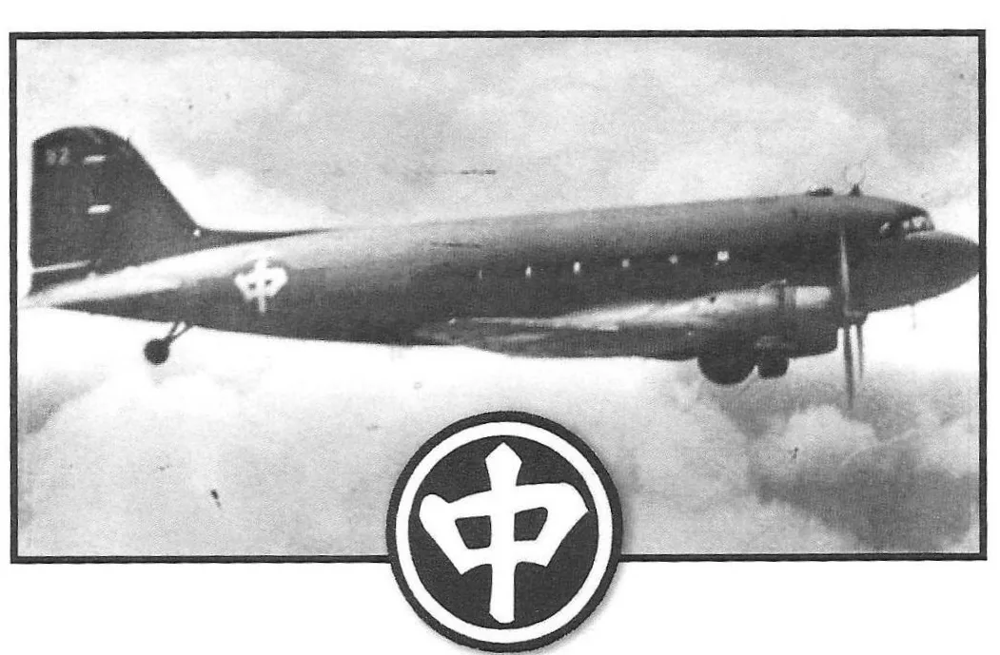
CNAC徽章“CHUNG” James Dalby 这张照片来历可参见最后邮件往来
In August 2016, a C-47 will depart from Australia and fly through Indonesia, Malaysia, Thailand, Myanmar and "across the hump" to Kunming, then on to Guilin, China.
The final resting place for this historic aircraft is to be the main exhibition display at the Flying Tiger Heritage Park and Museum in Guilin, China. This museum chronicles the critical contribution made by the Flying Tigers and the pilots who flew the hump to supply the Tigers during World War II.
2016年8月，一架C-47将从澳大利亚起飞，飞越印度尼西亚、马来西亚、泰国、缅甸，“越过驼峰”到达昆明，然后飞往中国桂林。它的最后栖息地在中国桂林飞虎队遗址公园，并成为最主要的展品。该遗址公园记录了飞虎队以及为飞虎队提供补给的驼峰航线飞行员做出的重要贡献。
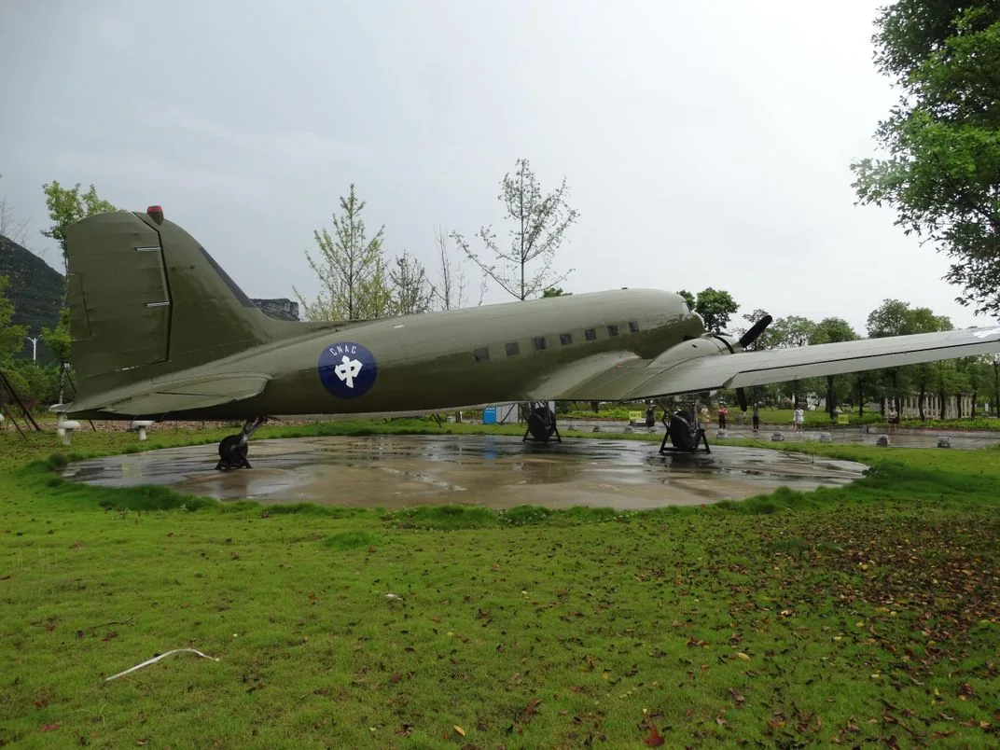
The timing of this flight is most critical, because at this moment, the United States, in cooperation with the Government of Myanmar, is currently conducting a MIA search and rescue mission for the remains of the 600 aircraft and 740 American crew members and other nationalities lost during this hazardous mission.
这次飞行的时机非常关键，因为当时正值美国正与缅甸政府合作，为在驼峰飞行任务中坠落的600架飞机残骸和740名美国机组人员以及其他国籍的遗骸执行MIA(missing in action)搜救任务（二战失踪人员寻找行动）。
The Flight is being conducted to honor those men who served to bring victory and peace, and to the friendships between nations today that are charged with keeping the peace.
这次飞行是向那些为赢得胜利与和平而付出的人致敬，也向今天肩负维护和平之责的各国之间的友谊致敬。
THE AIRCRAFT 飞机
A C-47 named "Buzz Buggy" painted in D-Day Invasion Colors and owned by the Flying Tigers Organization. Upon arrival in China, the aircraft will be repainted with CBI (China-Burma-India) markings on one side and CNAC (China National Aviation Corporation) markings on the other side.
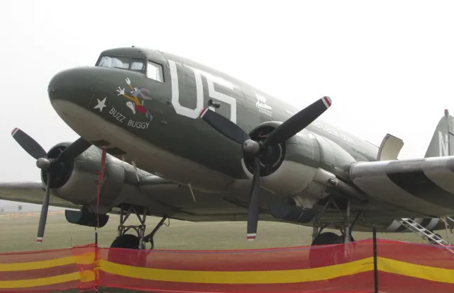
一架名为“Buzz Buggy” （昵称兔八哥） 的C-47涂上D日涂装
（D日涂装，是指机身后端和机翼根部的黑白条纹，是盟军在欧洲诺曼底
登陆作战期间的涂装
），由飞虎队历史委员会拥有。抵达中国后，飞机的一侧将重新涂上CBI（中国
- 缅甸 - 印度）标记，另一侧将重新涂上CNAC（中国航空公司）标记。
THE ROUTE 路线
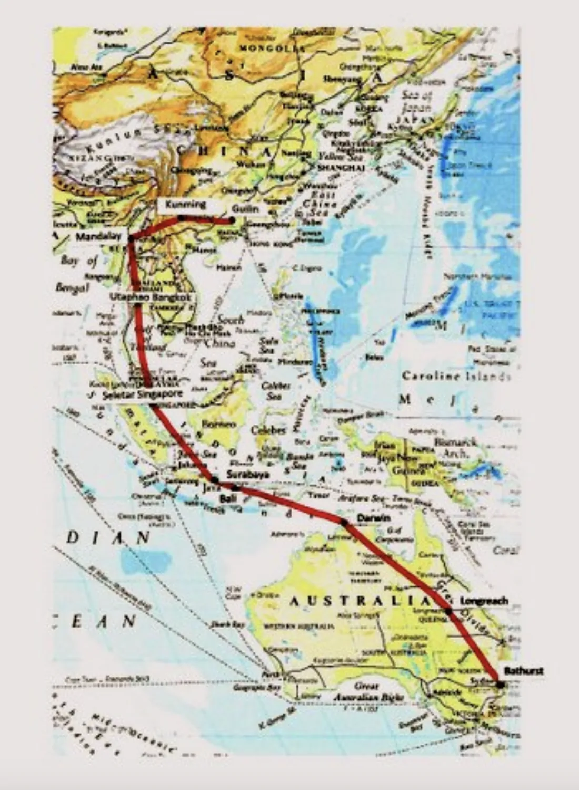
The Aircraft will be flown VFR via Darwin, Bali, Jakarta, Johor, U-Taphao, Chiangmai, Mandalay, Kunming, Guilin.
该飞机将经由达尔文，巴厘岛，雅加达，柔佛，U-Taphao，清迈，曼德勒，昆明，桂林飞行。
飞行原计划
DAY 1 - Bathurst (YBTH) - Longreach / 666NM (4.8hr)
行程日 1 -
巴瑟斯特 （YBTH） - 朗里奇 / 666 海里 （4.8小时）
DAY 2 -
Longreach (YLRE) - Darwin / 1,018NM (7.3hr)
行程日 2 - 朗里奇
（YLRE） - 达尔文 / 1,018海里（7.3小时）
DAY 3 - Darwin (YPDN) -
Bali / 959NM (6.9hr)
行程日 3 - 达尔文 （YPDN） - 巴厘岛 /
959海里（6.9小时）
DAY 4 - Bali (WADD) - Johor / 1,002NM
(7.2hr)
行程日 4 - 巴厘岛 / 柔佛 / 1,002海里（7.2小时）
*ENGINE
FAILURE - Emergency Landing in Surabaya, Indonesia.
*发动机故障 -
印度尼西亚泗水紧急着陆。
DAY 5 - Johor (WMKJ) - Utaphao / 654NM
(4.7hr)
第5天 - 柔佛 （WMKJ） - 乌塔法奥 / 654海里 （4.7小时）
DAY
6 - Utaphao (VTBU) - Mandalay / 627NM (4.6hr)
第6天 -
乌塔法奥（VTBU） - 曼德勒 / 627海里（4.6小时）
DAY 7 - Mandalay
(VYMD) - Kunming / 442NM (3.2hr)
第7天 - 曼德勒 / 昆明 / 442海里
（3.2小时）
DAY 8 - Kunming (ZPPP) - Guilin (ZGKL) / 371NM
(2.7hr)
第8天 - 昆明 （ZPPP） - 桂林 / 371海里 （2.7小时）
TOTAL DISTANCE - 5,658NM (40.5hr) 总飞行距离 5658海里（40.5小时）
五位飞行员的简介
五位飞行员三位来自澳洲，两位来自美国。我向Larry
Jobe老先生询问为什么是由来自澳洲的飞行员主飞，他没有回答我，这是他没有答复的两个问题之一。但是我从⻜⻁队历史委员会官网
https://www.flyingtigershistoricalorganization.com/
（国内无法访问）找到答案。所以关于飞行员简介这部分来自官网的新闻简报。
Originally Buzz Buggy was registered in Australia and FTHO’s original plan was to reregister her in the United States and be flown by American pilots. Legal complications soon emerged. American pilots would be required to pass an English level proficiency certification in Australia, and that proved, among other issues, unworkable to use American pilots. Fortunately, Australian pilots stepped up to the task.
兔八哥登记在澳洲，所以⻜⻁队历史委员会原本打算把它重新登记在美国，以便由美国飞行员来驾驶它。但这样做的法律问题很快就出现，美国飞行员竟还需在澳洲通过一项英语水平认证（让美国人考英语，本身就很荒唐），加上其他种种问题，最终证明由美国飞行员执飞行不通。但很幸运的是澳洲飞行员接下这个任务。
Dale Mueller – USAF academy graduate and DC 3 pilot was pilot-in-command from Bathurst to Surabaya. He was unable to join us after the engine failure due to other commitments.
Dale Mueller 美国空军学院毕业 DC-3 飞行员，担任从巴瑟斯特到泗水的机长。在泗水迫降后，因为飞机在泗水被扣留了一个月，Dale Mueller 有其他任务不得不先离开我们。
Alan Searle – Australian airline pilot with extensive DC 3 experience was pilot-in-command for most of the flight. (Surabaya to Guilin)
Alan Searle 澳大利亚航空公司飞行员，拥有丰富的 DC-3 飞行经验，担任从泗水到桂林的大部分航程的机长。
Bob Small – Australian airline pilot, also very experienced on the DC 3, was second-in-command from Surabaya on to Guilin.
Bob Small 澳大利亚航空公司飞行员，在 DC-3 上也拥有丰富的经验，担任从泗水到桂林的副机长。
Barry Arlow – Australian Engineer is very experienced on round engines and especially the R1830s on the C47.
Barry Arlow 澳大利亚工程师，在活塞发动机方面拥有丰富的经验，尤其是在 C-47 的 R1830 发动机方面。
Larry Jobe – American airline pilot with a little time on DC 3 but no type rating acted as relief pilot (when I could get them to relinquish control) – President of the Flying Tigers Historical Organization.
Larry Jobe – 美国航空公司飞行员，在 DC-3 上拥有少量飞行时间，但没有这个机型的驾驶资格，担任替补飞行员（前提是我能让他们把操纵杆交出来。注，这个简介是老爷子自己写的，冷幽默的自嘲了一下） – 飞虎队历史协会主席。
Tom Claytor – American pilot based in Thailand also acted as a relief pilot, provided expertise from Indonesia to Myanmar, set up www.FlyingTheHump.com website, linked his SPOT tracking online for all to follow our progress in real time, and took copious photos and videos from Darwin to Kunming.
Tom Claytor 驻泰国的美籍飞行员，也担任替补飞行员，为从印度尼西亚到缅甸的航程提供专业知识，建立了 www.FlyingTheHump.com 网站，链接了他的 SPOT设备跟踪飞机实时行程，以便所有人实时跟踪我们的进度，并拍摄了从达尔文到昆明的许多照片和视频。
Mick O’Grady – Australian Engineer also very experienced on round engines and again especially the R1830.
Mick O’Grady 澳大利亚工程师，在活塞发动机方面也拥有丰富的经验，尤其是在 R1830 发动机方面。
THE CHALLENGES 挑战
This is a very old aircraft and the engines have been carefully restored and prepared for the journey. Weather during the monsoon along the route will be a factor. The aircraft runs on 100LL avgas, which is harder to locate these days. We are receiving very kind assistance from the countries along the route. We have also heard that the Air Force in Myanmar may be interested in assisting with this historic flight. The Myanmar Air Force still operate PT-6 piston training aircraft at Meikhtila, and they have 90-92 octane fuel from China. This could be an exciting chance to work together and form friendships that honor a brave and historic past. We will update as this mission progresses.
这是一架非常古老的飞机，发动机经过精心修复并为旅程做好了准备。沿途季风期间的天气将是一个安全隐患。这架飞机以100LL avgas 燃料飞行，现在很难找到。我们得到了沿线国家的非常友善的援助。我们还听说缅甸空军可能有兴趣协助这次历史性的飞行。缅甸空军仍在Meikhtila使用PT-6活塞训练机，他们拥有来自中国的90-92辛烷值燃料。这或许是个再好不过的机会：让大家携手合作、结下友谊，并致敬那段勇敢岁月。我们将实时更新本次飞行的各项进展。
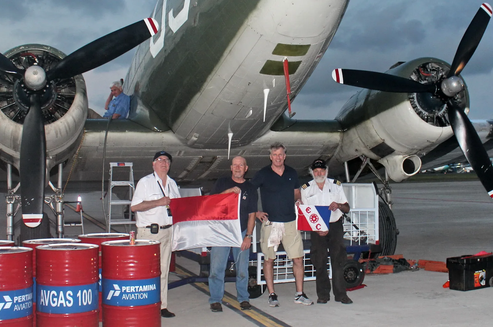
UPDATE 更新
On 16 August, we flew from Darwin to Bali. Total time was a little over 6 hours in the air. It then took us 5 hours to refuel the plane from 11 drums of Avgas and to add 7 gallons of oil to the engines.
8月16日，我们从达尔文飞往巴厘岛。在空中的总时间略多于6小时。然后我们花了 5 个小时，用11 桶 Avgas 为飞机加油，并向发动机添加 7 加仑机油。
On 17 August, we departed Bali for Johor (Malaysia). After 1hr 30min into the flight, smoke appeared coming from the left engine. After 15 seconds, the engine started to vibrate severely, then fire appeared. We shut down the engine and diverted to Surabaya (25 minutes away). The Indonesian ATC was very helpful and we landed safely. Initially the Indonesian authorities were friendly and cooperative. This was not to last.
8月17日，我们离开巴厘岛前往柔佛（马来西亚）。飞行1小时30分钟后，左侧发动机冒出烟雾。15秒后，发动机开始剧烈振动，然后起火。我们关闭引擎，转向泗水（25分钟飞行距离）。印度尼西亚的ATC （Air Traffic Control 空中交通管制）非常乐于助人，我们安全着陆。一开始印尼当地官员很友好，但这种状态没有持续多久。
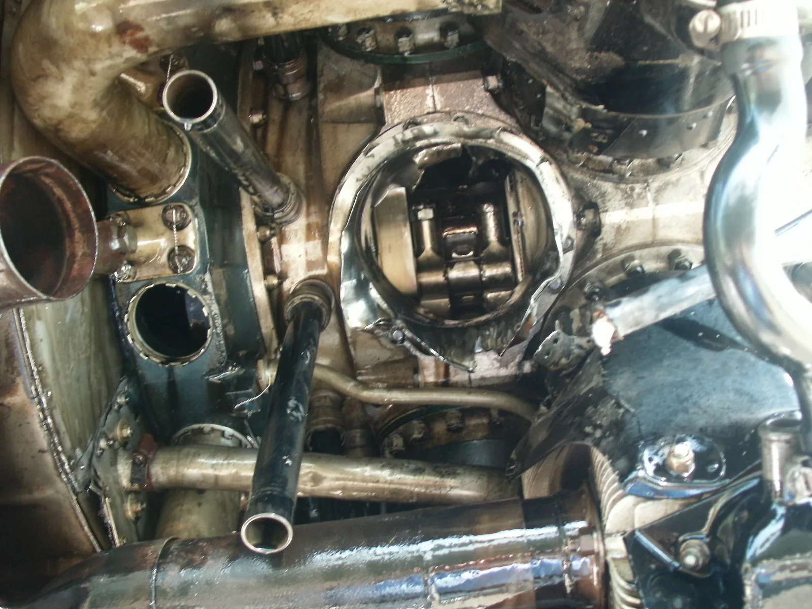
We have located several engines. We have to ship the engine to Surabaya and install it before the end of September. We are on the clock, because the annual on the aircraft expires in the end of October. All of our crew is working for free.
我们已经找到了几个引擎。我们必须在9月底之前将发动机运往泗水并安装。我们时间紧迫，因为飞机的年检时间在10 月底到期。我们所有的工作人员都是无偿工作的。
REPLACEMENT ENGINE READY TO SHIP
准备发货的替换发动机
In late August, we purchased a replacement R-1830 engine (which weighs over 1,000 kilograms). It is now in Melbourne, as we are trying to negotiate the very complicated procedure to import an engine into Indonesia. The first quote we received from the maintenance firm located next to the aircraft wanted to charge us us$12.5 per kilo "Handling Fee" to import the engine. As you can see this process is going to be interesting. Larry Jobe is now in Surabaya and the American Consulate has been advising and assisting us with negotiations. THANK YOU EVERYONE who has believed in this mission and has generously donated to our replacement engine. Thank you to Al Marsh for his update in AOPA MAGAZINE.
8月下旬，我们购买了一台替换的R-1830发动机（重量超过1000公斤）。它现在在墨尔本，我们谈判将发动机进口到印度尼西亚，这是一个非常复杂的过程。我们的C-47停靠点旁边的一家维修公司向我们发了第一个报价，它向我们收取每公斤 12.5 美元的“手续费”来进口发动机。如您所见，此过程将很有趣（折腾）。拉里·乔布现在在泗水，美国领事馆一直在为我们提供建议和协助谈判。感谢所有相信这一使命并为我们更换发动机慷慨捐赠的人。感谢 Al Marsh 在 AOPA 杂志上的更新。
BACK IN THE AIR 重回空中
If you were wondering how long it takes a bunch of mostly 70-year old guys to change a 2,000 pound engine on a C-47 in the 30*C heat, the answer is 9 days. We had hoped it would take 5, and it almost did, but we had to make sure. The amazing story is how we did it. Indonesia has to be one of the most corrupt countries in the world. There is no straight answer to anything. Whatever is negotiated, then changes. Whatever amount is agreed upon, is then increased. This is a land where a very unique and special style of negotiation is called for.
如果你想知道一群大多是 70 岁的家伙在 30度高温下更换 C-47 上的 2000 磅发动机需要多长时间，答案是 9 天。我们曾希望 5 天能完成，而且几乎做到了，但我们必须确保一切万无一失。我们究竟是如何做到的，是整个故事最精彩的一段。印度尼西亚是世界上最腐败的国家之一，任何事情都没有直接的答复。无论谈判什么都会改变；无论商定什么金额，都会增加。在这片土地上，需要一种非常独特和特殊的谈判风格。
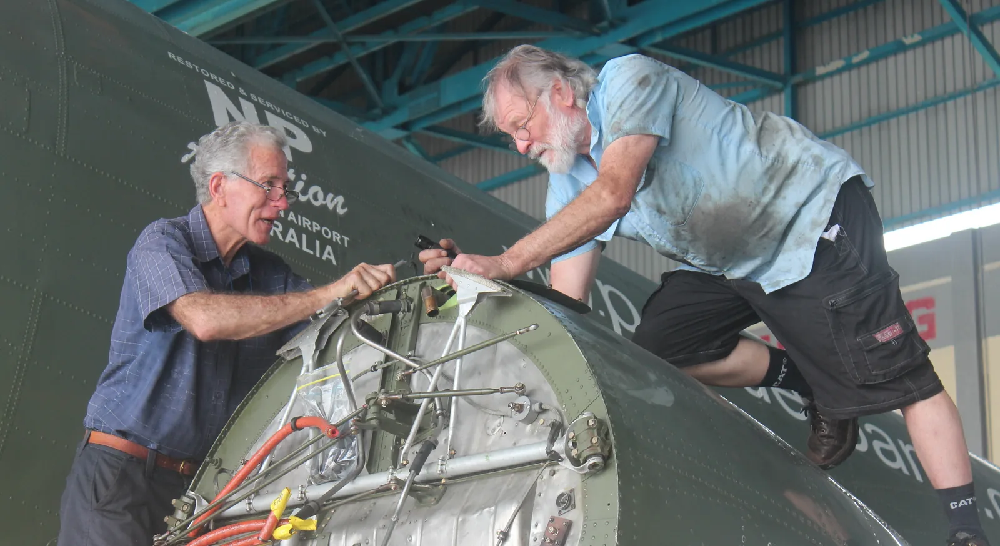
We started with a 500 us$ per day parking fee on an apron that belonged to the Navy. The chaps charging us, didn't even own it. Then there was the us$20,000 Customs "Handling Fee." We knew this was going to be difficult. We started with what is called in Indonesian as "Makan Tulu" (eat first). It took us about 2 weeks of forming alliances and getting our story in the Jawa Pos newspaper to change the tide of the forces against us.
我们的艰难历程从每天被收取500美元的停机费开始。这是属于海军的停机坪，但向我们收费的家伙不拥有这个停机坪（简报里提到 Indonesian Navy owns the airport but does not control it）。然后是2万美元的海关“手续费”。我们知道这会很困难。我们从印尼语中所谓的“Makan Tulu”（先吃）开始。我们花了大约 2 周的时间结成联盟，并在当地 Jawa Pos 报纸上发表我们的故事，以改变准备对我们磨刀霍霍的暗流。
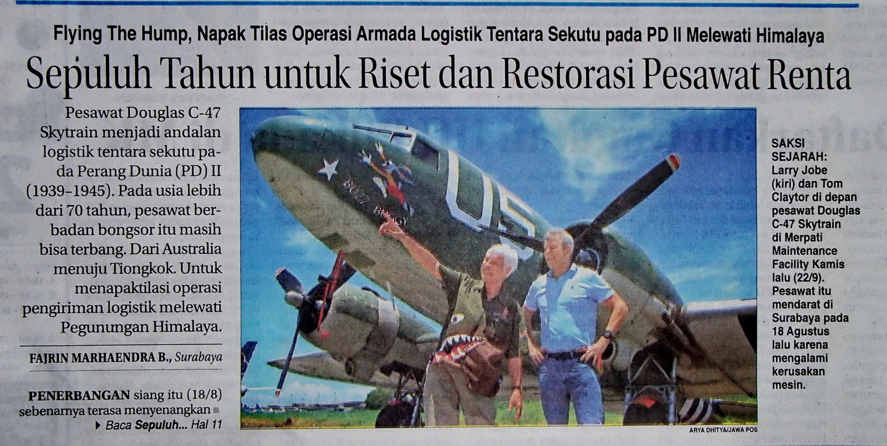
In most parts of the world, if you have an engine failure, everyone wants to help you; our experience at the airport in Surabaya was that, as soon as we had landed safely, everybody wanted to eat us. It started with our having to wait 3 hours in an Immigration holding area. They could have just given us a 30 day "tourist" entry Visa, but instead, they were trying to find some way to fine us and detain us, perhaps to extort money from us.
在世界大部分地区，如果你遇到发动机故障，每个人都想帮助你；我们在泗水机场的经验是，一旦我们安全着陆，每个人都想“吃掉”我们。这始于我们不得不在移民拘留区等待3个小时。他们本可以给我们一个30天的“旅游”入境签证，但相反，他们试图找到某种方法来罚款和拘留我们，也许是为了向我们勒索钱财。
Barry found a used engine back in Australia. Tom and Larry hit the ground hard and found the way to get the engine into Surabaya. Our new allies were the Chinese Consul General and her Economic Attache. They went with us to meet the head of Customs. Normally, Customs can hold an engine for up to 30 days, and it is also impossible to import a "used" engine. There are no "new" C-47 engines, but it was useless to explain that, so we instead imported "spare parts" for a complete engine. At one point in the negotiation, the head of the Indonesian Customs looked at us and said, "why is the China helping the America?"
巴里在澳大利亚发现了一台二手发动机。汤姆和拉里铆足了劲四处奔走，终于找到了把发动机运进泗水的门路。我们的新盟友是中国总领事和她的经济参赞。他们和我们一起去见海关负责人。通常海关最多可以扣留一台发动机30天，而且不能进口“二手”发动机。 可是没有“全新”C-47 发动机，解释这一点是没有用的，于是我们换了个名目，按”一台完整发动机的备件"申报进口。在谈判的某一时刻，印尼海关负责人盯着我们问：“中国为什么要帮助美国？”
And there we were, and they certainly did help us. We cleared the engine in 2 days. The next problem was how do a bunch of mostly 70 year old chaps load a 2,000 pound broken engine into the back of a C-47. We were NOT allowed to ship it back to Australia but they demanded we put it on the aircraft when we left. I would assume if we had offered to bribe them we might have been allowed to ship the engine. This caused quite a few problems both weight wise on the plane and logistics wise just getting into position on Buzz Buggy to balance the plane.
但事情就是这样，中国人确实帮助我们。我们在 2 天内为发动机完成清关。接下来的问题是，一群70岁的老伙计如何将那台2000磅重的坏了的发动机装进C-47后机舱。海关不允许我们把发动机运回澳大利亚，而是要求我们自己把它运飞出去。 我猜如果我们贿赂了他们，他们应该就会同意我们把坏的发动机运回去。把这么重的坏发动机放在飞机里，不仅对飞机负重有影响，而且如何放置好它以便让兔八哥保持平衡也是一个难题。
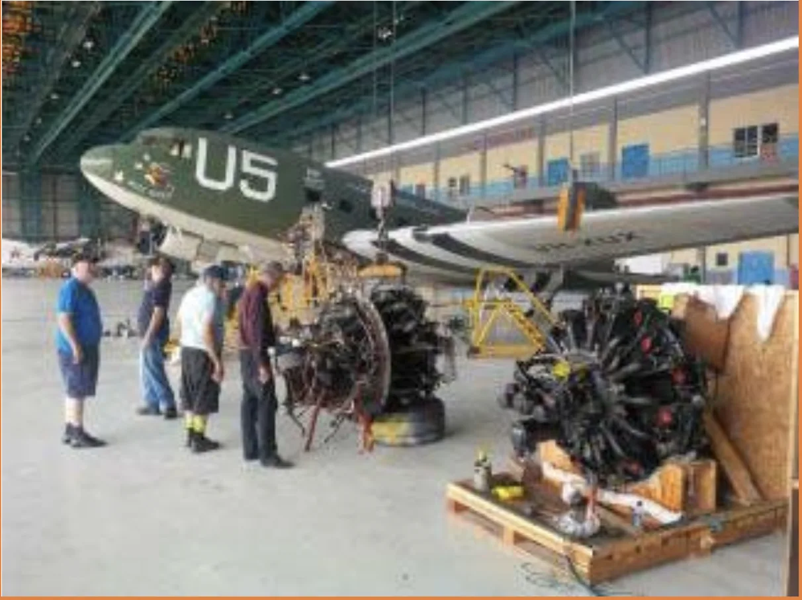
Next to us on the ramp, were about 15 Russians who were repairing their Sukhoi Jet. They invited us to drink Vodka with them. Tom and Barry were the designated drinkers. We asked them how they would load a 2,000 pound engine in a C-47, and they knew exactly how. More Vodka. The next day, we had a crane, some wooden palltes, a few metal pipes and our 10 Russian friends. We lowered, levered, and heaved the engine right in and up inside the plane in about 20 minutes. No problem, more Vodka. And we learned the very important Russian Folklore expression, "Nee VeeZhoe PreeCheeNee, ShtoeBey Nyie VeePyiet" (there is no reason not to drink), and we made some good friends. The story goes on.... (more later).
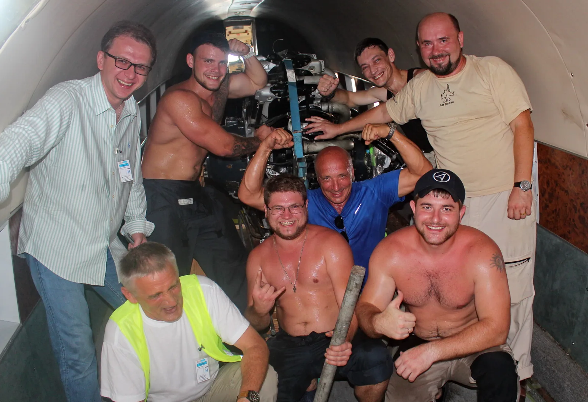
在我们C-47旁边的停机坪上，大约有 15 名俄罗斯人正在修理他们的苏霍伊喷气式飞机。他们邀请我们和他们一起喝伏特加。汤姆和巴里是指定的饮酒者。我们问他们如何把2000磅的发动机装进C-47中？小事一桩，不用担心，先来点伏特加吧。第二天，我们有一台起重机，一些木托盘，几根金属管和我们的10个俄罗斯朋友。我们在大约 20 分钟里降低、操纵和提升发动机把它装进飞机里。没问题了，再来杯伏特加。我们学习了一句非常重要的俄语，“Nee VeeZhoe PreeCheeNee，ShtoeBey Nyie VeePyiet”，没有理由不喝酒，我们结交了一些好朋友。精彩故事还在继续。
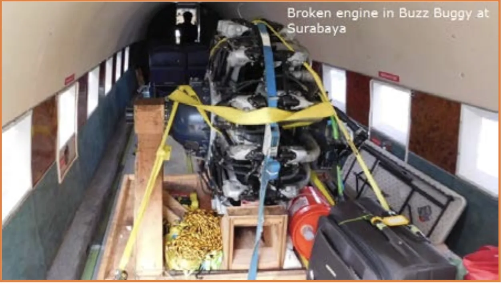
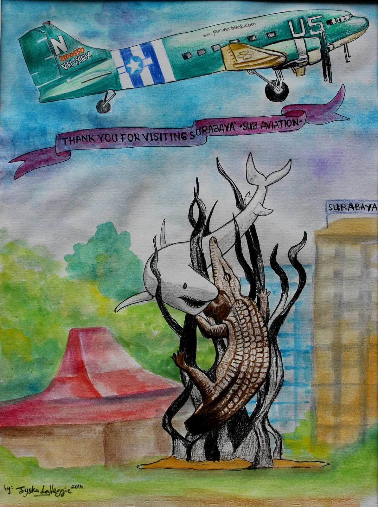
After a month in Surabaya, Larry was awarded the honorary "Surabayan" T-shirt. The symbol of Surabaya is a Crocodile and a Shark circling around a minaret.
在泗水呆了一个月后，拉里被授予“荣誉泗水人”T恤。泗水的象征是鳄鱼和鲨鱼在宣礼塔周围盘旋。
The final obstacle was a departure tax the Surabyan authorities levied. Engines running and ready for departure, ground control would not issue taxi instructions or a clearance; then an official drove up and demanded $1,000,000 Rupee, about $100 USD - in cash – no bill – no receipt. Fortunately, the crew had the $1,000,000 rupees cash on them, paid the bribe and, finally, free to leave, Buzz Buggy left for Seletar.
最后的障碍是泗水当局征收的离境税。虽然发动机已经启动准备起飞，但地面控制台并未给出滑行指令或者放行许可；然后一位官员走上前来，要求支付1,000,000卢比，大约相当于100美元，只能用现金支付，而且没有账单连收据也没有。幸运的是，机组成员带着1,000,000卢比的现金，付了这笔贿赂，然后我们终于离开了。兔八哥飞往下一站实里达（Seletar）
SINGAPORE INVITATION 新加坡邀请函
We have received an invitation from the Singapore Flying Club to land in the historic Seletar Airport after our departure from Surabaya. Singapore Flying Club is one of the oldest flying clubs in all of Asia, starting with seaplanes in 1928. They are trying to find sponsors for fees, avgas, and oil. In this case, we will alter our plan to land in Singapore to give a talk to aviator friends there and prepare for the next leg of the journey to U-Taphao, Thailand. Standby as we wait to hear more about this exciting opportunity -- Singapore Flying Club
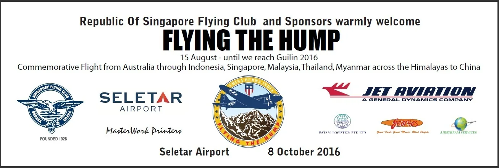
我们收到了新加坡飞行俱乐部的邀请，让我们离开泗水后降落在历史悠久的实里达（Seletar）机场。新加坡飞行俱乐部是亚洲最古老的飞行俱乐部之一，始于1928年的水上飞机。他们正试图为我们的费用、航空汽油和其他机油寻找赞助商。在这种情况下，我们将改变原计划，改为降落在新加坡，与那里的飞行员朋友交谈，并为前往泰国U-Taphao的下一站旅程做准备。敬请等待我们进一步报道这个令人兴奋的机会 -- 下一站，新加坡飞行俱乐部。
SINGAPORE 新加坡
Aviation is a very small world, and the Thailand EAA Chapter had hosted Buck”, the Manager of the historic Republic of Singapore Flying Club, for a talk on the history of aviation in Singapore. Buck asked us why we weren't stopping in Singapore on our way North. We said that Johor in Malaysia was a cheaper option for us. It took Buck a few seconds to change our minds, and we received the most tremendous and welcome hospitality that any war-ravaged Surabayan C-47 crew could imagine.
航空圈子很小，EAA泰国分会曾邀请历史悠久的新加坡共和国飞行俱乐部的经理巴克就新加坡航空历史进行演讲。巴克问我们为什么北上时不停在新加坡。我们说马来西亚的柔佛对我们来说是一个更便宜的选择。巴克只花了几秒钟就改变我们的主意，然后我们这群饱受泗水蹂躏的C-47机组人员得到了做梦都想不到的热情款待。
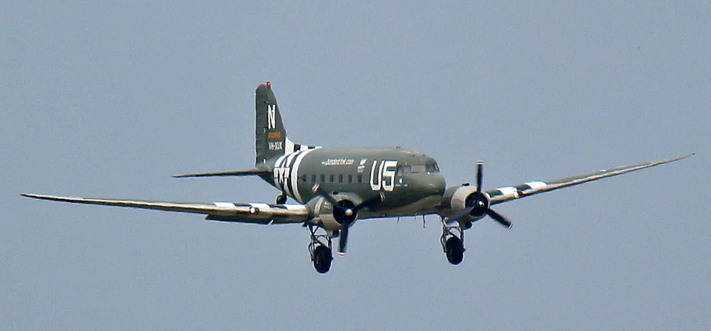
The club donated us a free drum of W120 Aeroshell Oil. All fees were waived. Jet Aviation took wonderful care of us, and all the members of the Flying Club turned out to greet us and take us to dinner and help with absolutely anything we needed. It didn't take Barry and Mick long to pull the cowlings off and start sorting out our rough magneto, and 2 days turned into 5 days. Seletar has some pretty strick rules, and you can only run up an engine in a special run-up area. This rule was enforced the first couple of days, but when they realized how long it takes a bunch of mostly 70 year old chaps to follow this procedure, an exception was made for an "APU-style run-up" in our special parking area. In the midst of one of our repair sessions, some young Singaporeans peered through a fence and politely commented, "You guys look like The Expendables..."
俱乐部免费捐赠了我们一桶W120航空润滑油，并免除所有费用。Jet Aviation非常照顾我们，飞行俱乐部的所有成员都来迎接我们，带我们去吃饭，并帮助解决我们需要的任何东西。没过多久，巴里和米克就把整流罩拆下来，开始排查那个工作不正常的磁电机，2天变成了5天。实里达有一些非常严格的规则，发动机只能在专门的试车区试车。这条规则在头几天被强制执行，但是当他们意识到一群大多是 70 岁的老伙计需要多长时间才能遵循这个程序时，允许在我们那个专用机位上做"APU 式试车"。在我们的一次检修中，一些年轻的新加坡人透过栅栏看着我们并礼貌地评论说：“你们看起来真像敢死队……”
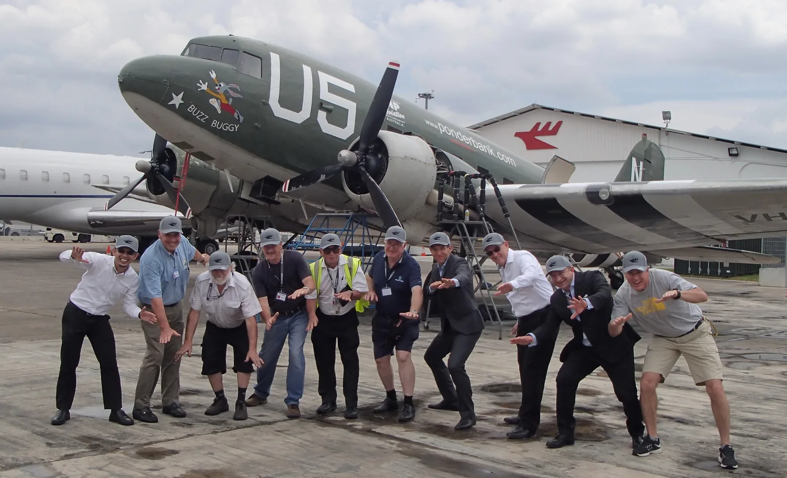
THAILAND 泰国
As we landed at U-Taphao Airbase in Thailand, the news was spreading that the beloved long serving King Bhumibol of Thailand had passed away. Everything was very quiet. We shut down and met with some Thai Navy personnel and handling agents, but there was a deep sadness and stillness in all the people we met. The plane was flying well. We topped off with drums of fuel previously arranged by Indochina Aviation and were hungry and tired.
当我们降落在泰国的U-Taphao空军基地时，泰国正沉浸在巨大的悲痛中，深受爱戴的泰国国王普密蓬去世了，一切都非常安静。我们会见了一些泰国海军人员和地面服务代理，我们遇到的所有人都有一种深深的悲伤和安静。飞机飞得很好。我们用 Indochina 航空公司先前安排的燃料桶加满了燃料，又饿又累。
The following morning, we departed for Chiangmai low level. We made a low pass over the headquarters of EAA THAILAND which had helped us with connections on shipping agents and secret procedures to get a "used engine" imported into Indonesia, then proceeded north to the West of Bangkok. The weather was fine, and we had another refuel and flight plan stop in Chiangmai.
第二天早上，我们启程低飞前往清迈。我们在EAA泰国分部低空经过，当初正是他们牵线帮我们找到了货运代理，又指点了一些不便明说的门道，才将“二手发动机”进口到印度尼西亚。我们接着向北，飞过曼谷西部。天气很好，我们在清迈加油和继续飞行。
MYANMAR 缅甸
As we crossed the FIR into Myanmar, there was a marked change in ATC procedures. For one, we could barely understand the chaps in Mandalay. Then there were 3 or 4 aircraft talking over each other, and when they blocked each other out, they spoke louder and faster. It was feeling a bit like the wild west. We passed over TaungGyi, then some mountains and down into the Irrawaddy Valley. We managed to slip in before the 3-4 other aircraft and taxied up to a warm group of spectators waving American and Myanmar Flags.
当我们越过飞行情报区进入缅甸时，ATC程序发生了明显变化。首先，我们几乎无法听懂曼德勒小伙子的话。然后有3或4架飞机互相交谈，当他们互相不让对方说话时，他们就用更大音量和更快的语速，感觉有点像狂野的西部。我们越过东枝，然后经过一些山脉，进入伊洛瓦底江山谷。我们设法在3-4架其他飞机之前溜进去，滑行到一群挥舞着美国和缅甸国旗的热情观众面前。
There were hugs and smiles and we clambered out, and then the greatest surprise of all -- the Myanmar Air Force "TatmadawLey" pulled up in an army truck with 4 drums of Chinese Avgas and a hand pump. 5 very smart and polished Air Force Officers presented themselves, and announced that they had been waiting for us for 10 days. What a tour-de-force, and a salute to our friend, Danny, the Israeli Ambassador who personally went and met with the Commander of the Burmese Air Force to request their help with this honorable mission.
拥抱和微笑，然后最大的惊喜 - 缅甸空军“TatmadawLey”开着一辆军用卡车过来，里面有4桶中国Avgas和一个手动泵。5名精明干练、军容严整的空军军官出现了，并宣布他们已经等了我们10天。这一手实在干得漂亮！向我们的朋友丹尼，以色列大使致敬，他亲自前往会见缅甸空军司令，请求他们帮助完成这一光荣的任务。
That evening, we were taken to the Jefferson Center in downtown Mandalay to give a talk about our journey to a packed room of Burmese English-speaking enthusiasts who had been following our progress on facebook for almost 2 months. We had finally made it. We had a delicious Burmese dinner arranged by our Indochina Aviation hosts who had come to Mandalay to help smooth the delicate process of departing to the East over "The Hump.”
那天晚上我们被带到曼德勒市中心的杰斐逊中心，讲我们这一路的经历。屋子里挤满了会讲英语的缅甸朋友，他们在 Facebook 上追着我们的进展看了快两个月，才终于把我们等来。我们吃了一顿美味的缅甸晚餐，由我们的Indochina 航空东道主安排，他们来到曼德勒帮助我们应对从“驼峰”上空飞抵昆明可能出现的问题。
The following morning, the weather looked okay. A few clouds, but an early start would give us the chance to cross the mountains before the clouds could build. At least, this was the hope…
第二天早上，天气看起来不错。有几朵云，早点起飞让我们有机会在云层形成之前翻越山岭。至少，我们希望这样…
THE HUMP POINT 驼峰点
15 Oct 2016, A text message to our friends: “We have crossed from Burmese to Chinese Airspace 15 minutes ago at LINSO point time 03:33Z (11:33 Local Beijing).” We immediately received excellent comms from Kunming Radio. We had to flight plan out of Myanmar at Flight Level F270, but we stopped our climb at 12,500'. As soon as we had contact with Kunming, they requested our climb to 4,500meters (14,800'). In all his years in Papua, New Guinea our pilot-in-charge Alan Searle had never climbed that high in a DC3.
2016年10月15日，一条短信给我们的朋友：“我们在15分钟前在LINSO点时间03：33Z（北京当地时间11：33）从缅甸越境到中国领空。” 一进入中国空域，我们立刻就联系上了昆明控制台，信号很清晰。按规定，我们必须在F270飞行高度（海平面以上 27000英尺）飞离缅甸，但我们在12,500英尺就停止了爬升。我们和昆明接触后，他们就要求我们爬升到4,500米（14,800英尺）。我们的主驾驶员 Alan Searle 驾驶DC3在巴布亚新几内亚的岁月（45年前）里，还从未爬升过那么高。
We put the engines forward to climb power at 2350 rpm and 28" manifold pressure (we are off the placard charts on performance). The plane climbed right away and smartly to 14.7 in about 5 minutes. It is getting a little chilly now, and all of us forgot to put our wool socks on. Below us are sharp valleys and jagged brown rivers flowing back and forth. We have passed the few CB thunderheads on the border and we are about 500' to 1,000' above a cloud layer now. Larry has brought us up a bottle of O2 in case anyone feels light headed, but we are all feeling good at the moment.
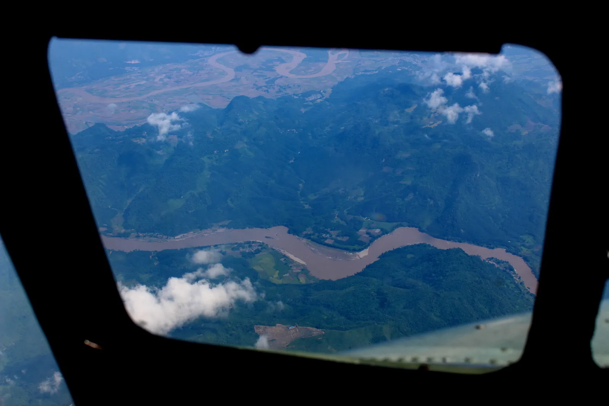
我们将发动机的功率提升至 2350 rpm 和 28 mp 爬升功率（到了这个高度，手册上已经没有数据可查）。飞机在大约五分钟内立即爬升到14800英尺的指定高度。现在天气有点冷了，我们所有人都忘了穿羊毛袜。我们的脚下是刀劈似的峡谷，浑黄的河流在谷间曲折来回。我们已经通过了边境线上几片积雨云层，我们现在在云层上方约500至1,000英尺。拉里给我们带来了一瓶氧气，如果有人感到头晕目眩可以吸吸，但我们现在都感觉很好。
We are now passing overhead Lintsang Airfield (ZPLC). The Kunming Radio chaps speak perfect English to us, but all other traffic is speaking Chinese. A large town now appearing on the left. We are about to go into cloud again. Present groundspeed at this altitude is 150 Knots. We are now running on the Aux tanks which is the fuel (90-95 Octane) that the Burmese Air force (TatmadawLey) kindly brought to us by truck from Yangon to Mandalay, then they pumped by hand 4 drums into our wings. We are now 1 hour out of Kunming. Larry says he will kiss the ground in Kunming. This is an amazing airplane. The thought going through all our minds is that after fixing all the things and all the difficulties and the tremendous costs involved with our septuagenarian crew, this may well be the last time any C47 will ever fly the Hump.”
我们正飞越临沧机场（ZPLC）上空。昆明控制台的小伙子对我们说一口流利的英语，但其他飞机的通话全是中文。左边出现了一个大城镇。我们即将再次进入云层。目前在这个高度的地速是150节。我们现在使用辅助油箱运行，这是缅甸空军（TatmadawLey）用卡车从仰光带到曼德勒的燃料（90-95辛烷值），然后他们用手把燃料泵入我们的机翼。我们现在离昆明1小时路程。拉里说他将在昆明亲吻大地。这是一架了不起的飞机。 我们所有人脑海中的想法是，这一路修了多少东西、遇到了多少难处、花了多少钱，机组又都是七十来岁的老头子，这很可能是任何C47最后一次飞越驼峰。”
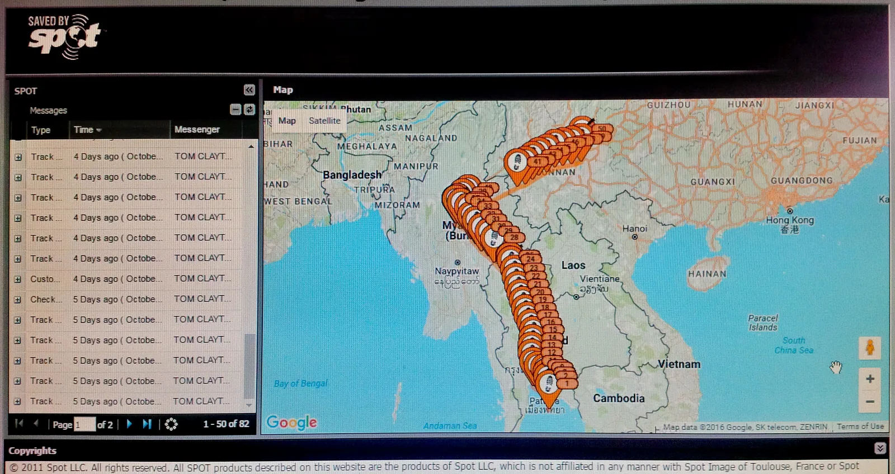
KUNMING 昆明
15 minutes out of Kunming, we lost the right engine. Smoke, then vibration, but this time we were faster and shut it down promptly. It was the top of the #1 cylinder. Then the fun started. We transmitted "Pan Pan Pan" (distress call) on the radio, but the Chinese controllers were not familiar with this terminology. We then explained that we had and "engine failure" and requested priority landing. They asked if we had an "engine fire," and we said, no, "engine failure."
距离昆明还有15分钟的时候，我们失去了右引擎。它冒烟，然后振动，但这次我们反应很快，迅速关闭了它。故障发生在一号气缸的顶部。然后有意思的事（又）开始了。我们通过无线电传输“Pan Pan Pan”（紧急呼叫），但中国管制员不熟悉这个术语。然后我们解释说我们有“发动机故障”并要求优先着陆。他们问我们是否有“发动机起火”，我们说，没有，是“发动机故障”。
This went back and forth until several Chinese aircraft with Chinese pilots trained overseas explained that we had a problem and had to land immediately. We were cleared in, but they wouldn't give us the final turn onto approach until we confirmed visual with the ground. There was a lot of haze, and we could see the runway on our GPS. Finally, we saw the ground and were turned in, but now we were too close and too high.
就这样来来回回解释了几遍也没说清楚情况，所幸同一个无线电频道里还有其他几架中国民航的飞机，他们的飞行员（都在海外受过训）帮忙向管制员解释，我们必须立即降落这才获得进场许可。但在我们报告能看见地面之前，他们不肯让我们转弯对正跑道。当时雾霾很重，跑道只能在 GPS 上看到。最后我们终于看见了地面，被引导转了过去，可这时已经离得太近、高度也太高了。
We declared that we were going to "orbit left to lose altitude," but that caused more confusion and they asked why we were changing heading. Finally, we were down where we should be and lined up to land and roll off again on a high speed taxiway, so we wouldn't block landing traffic which seemed to be at the rate of one aircraft every minute on the two runways of this airport. We rolled, and taxied as far as we could, then shut her down. Emergency vehicles and spectators lined the sides of the taxiway. We were towed to a parking area, and as we looked around, there were about 500 people there to greet us with banners and flowers.
我们宣布我们将“左转盘旋下降高度” （orbit to lose altitude 是指飞机盘旋下降），但这引起了更多的混乱，他们问我们为什么要改变航向？终于，我们降落到合适的高度，对正跑道准备着陆了；并打算在落地后从快速脱离道尽快滑出跑道，免得挡住后面等着着陆的飞机。在这个机场的两条跑道上，着陆进场的流量似乎每分钟一架飞机（流量很大）。着陆时我们在跑道上尽可能远地滑行，最后总算把飞机停了下来，紧急车辆和观众早就在滑行道两侧排成一排。我们被拖到一个停机位，当我们环顾四周时，大约有500人在那里用横幅和鲜花迎接我们。
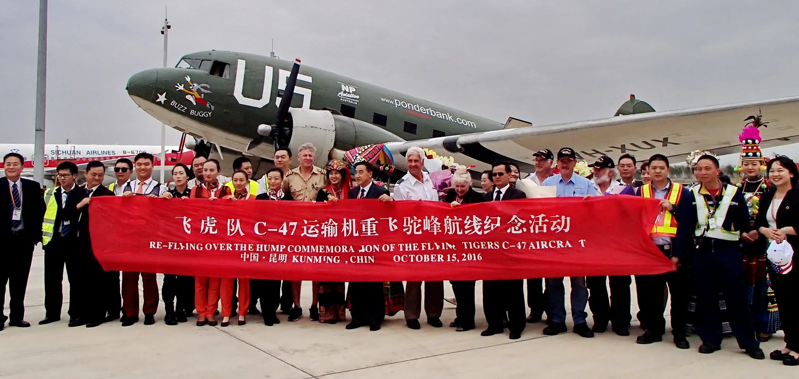
We had made it over the hump... One last time.
我们越过了驼峰…最后一次。
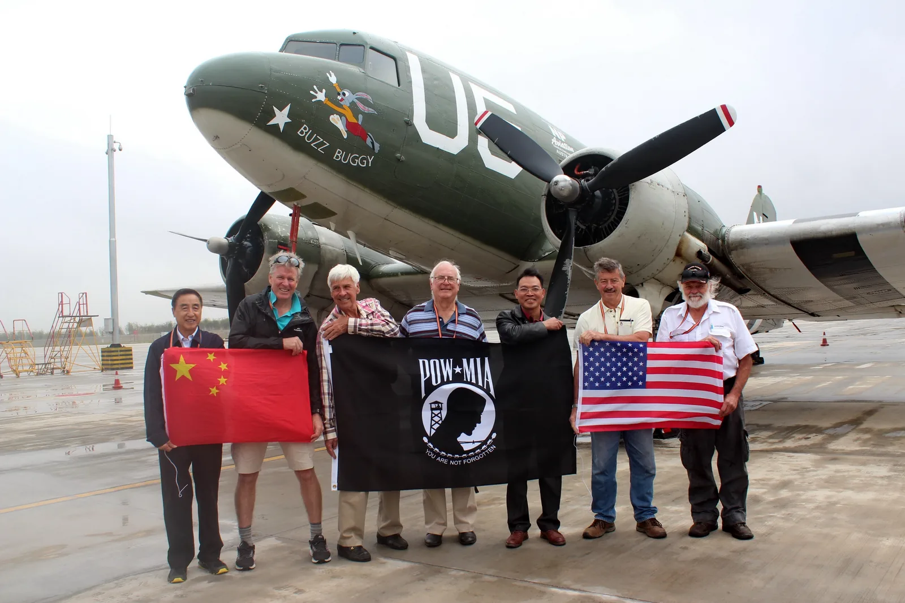
机组在昆明着陆后的合影，他们手持中美两国国旗和一面 POW/MIA 旗。旗上题字 "You Are Not Forgotten"——你们没有被忘记。这面旗由美国国防部战俘与战时失踪人员统计局泰国分遣队（DPAA Det 1）提供，经 Kevin Pritz、John Lee 和 Chris Mosenbach 促成，于 2016 年 10 月 15 日随机飞越驼峰，以告慰二战中在驼峰航线失事的 600 多架飞机上的机组人员。
新华社相关报道 飞虎队运输机抵达昆明
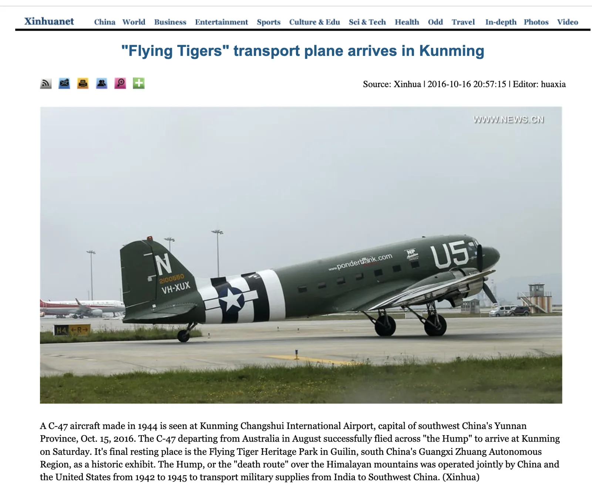
A SURPRISE 一个惊喜
Sometimes, a bad thing is a good thing. We had lost another engine, so we couldn't go anywhere. The following day, we were loaded into a van and driven out of Kunming and up a mountain side almost 2,000'. We finally stopped in a pine wood, with soldiers at attention, and long flight of stairs up into the wood. As we climbed, we could see a towering marble structure with Chinese characters on the front. This was a monument to the Hump Pilots of World War II. We assembled in front, and listened to sobering Chinese music, and then we were asked to place flower wreaths at the base of the monument.
有时候，坏事就是好事。我们失去了另一个引擎，所以我们哪儿也去不了。第二天，我们被装上一辆面包车，驶出昆明，上了近2000英尺的山坡。我们终于在一片松树林里停了下来，有一群士兵列队肃立，还有很长的楼梯进入树林。当我们爬上去时，我们可以看到一个高耸的大理石结构，前面有汉字。原来这是驼峰飞行员的纪念碑！我们聚集在前面，听着庄严肃穆的音乐，然后我们被邀请在纪念碑的底部放置花圈。
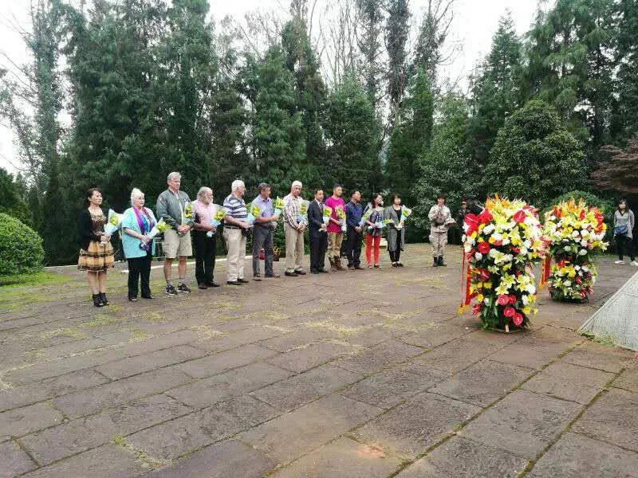
There was a 1.5 meter cut down through the center of the monument. We were led into this corridor by the soldiers. One of the translators then told us to clap our hands. The sound echoed off the walls, and the translator said, "Do you hear that... that is the sound of the Japanese guns shooting at the pilots who flew the hump." As we emerged on the far side of the monument, there was a wall carved in Chinese and English. "This monument is to honor the American pilots and other nationalities that flew the hump during World War II to save the Chinese people." My eyes watered as I started to realize what this place was and what we had sacrificed here.
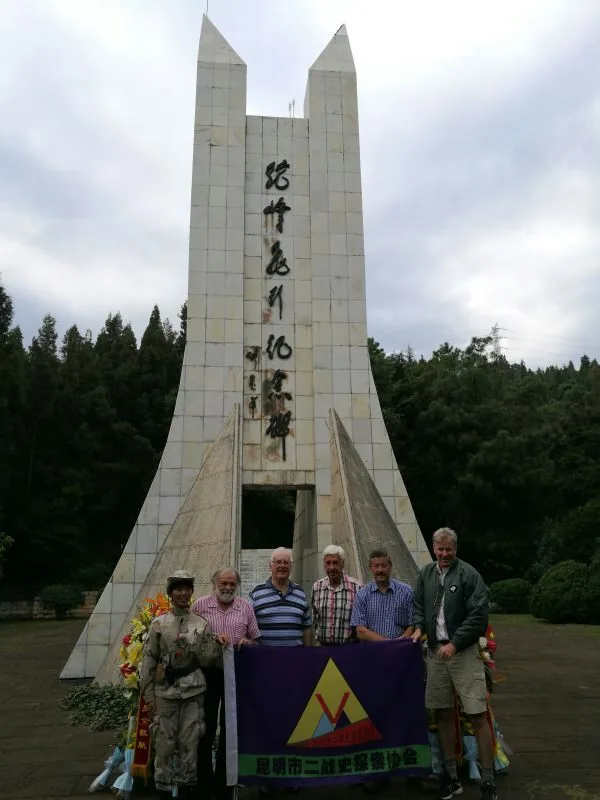
这个纪念碑的造型有些特别（从中心往下有1.5米的“切口”），我们被士兵们带到了纪念碑内的一条走廊。然后，其中一位翻译让我们拍手，声音在墙壁上回荡，翻译说：“你听到了吗……那是日本人向飞越驼峰的飞行员射击的声音”。当我们走到纪念碑的另一侧时，看到有一面用中文和英文雕刻的墙，上面写着“这座纪念碑是为了纪念二战期间为拯救中国人民而飞过驼峰的美国飞行员和其他国家的飞行员。” 突然间，我察觉到泪水早已打湿了我的眼眶。
That evening, we were taken to the Flying Tigers Restaurant in the heart of Kunming. This was the very same place where Claire Chennault and the Flying Tigers used to hang out during World War II. The walls are adorned with black and white photographs and paraphernalia from that time... and today, it has become the home of the "Flying Tigers Hot Dog.”
那天晚上，我们被带到昆明市中心的飞虎队餐厅，餐厅的墙上装饰着当时的黑白照片和各种老物件。这是克莱尔·陈纳德和飞虎队在第二次世界大战期间经常来聚会的地方，而今天它成了“飞虎队热狗”的发源地。
After a delicious dinner, members of our intrepid crew joined our China Friendship Association Attache "AJ" to another special place -- "The Hump Bar." Here we found more photos, and flying jackets on the wall, ice cold beer and some members of the Chinese PLA Army. We greeted each other warmly without speaking any words that the other could understand and pointed to the C47's on the wall and explained that we just did that... They came to our table and invited us to stand for a toast. It was a fine end to a long day.
在一顿美味的晚餐后，我们勇敢的队员加入了陪伴我们的中国人民对外友好协会联络官“AJ”，前往另一个特别的地方“驼峰酒吧”。在这里，我们发现了更多的照片，墙上有飞行夹克，还有冰镇啤酒和一群中国人民解放军战士。大家热情地互相打招呼，不需要任何解释，我们指着墙上的C47说我们刚刚这样做了……他们来到我们的餐桌旁，郑重地向我们敬酒。这是漫长的一天的完美收官。
LONG JOURNEY'S END 长途跋涉的终点
In November 2017, The Chinese purchased a new engine and the aircraft finally arrived in Guilin. It now takes pride-of-place at the Flying Tiger Heritage Park and Museum with a plaque to those who helped us secure a replacement engine when we were up against the wall and very close to having to abandon the mission in Surabaya, Indonesia, and to the crew who brought her here.
2016年11月，中国人购买了一台新发动机，飞机终于抵达桂林飞虎队遗址公园。如今它被安放在遗址公园最醒目的地方，飞机展台前的说明牌上描述了当我们几乎接近不得不放弃在印度尼西亚泗水的任务时，那些帮助我们获得更换发动机的人以及将她带到这里的机组成员。
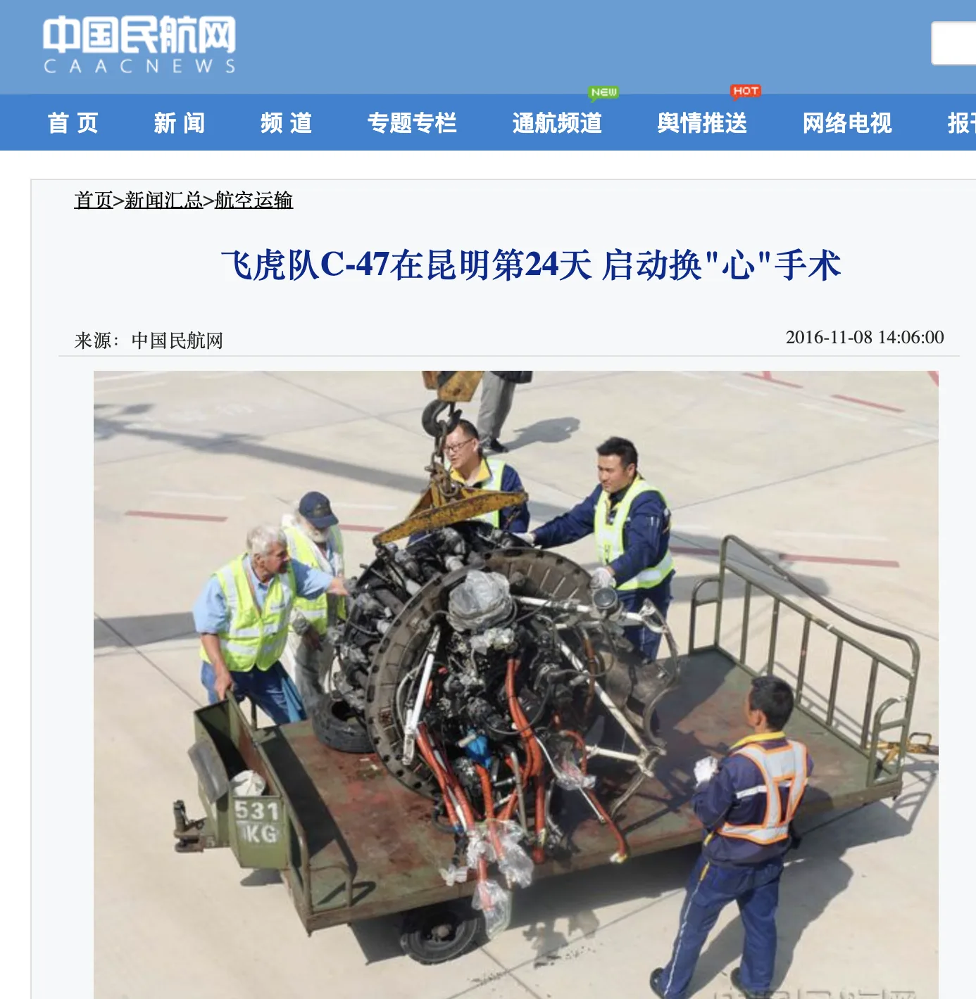
A POINT OF HONOR 特别致谢 （一件或许早该了结的事）
After successfully completing the mission, there are many people who helped make the expedition a success. One of them is Indochina Aviation Services who provided tireless help in obtaining and changing and re-obtaining flight clearances after our many technical delays through Thailand and Myanmar. Both of these countries require "local handlers" to apply for clearances and to handle the flights through the country.
有很多人帮助这次飞行取得了成功，其中之一是 Indochina 航空服务公司。在我们屡屡因技术故障拖延行程之后，是他们不辞辛劳地一次次为我们申请、修改、再申请飞越泰国和缅甸的许可，因为这两个国家都要求必须由“地面服务代理”申请许可并处理通过该国的航班飞行许可。
Indochina Aviation did this for us at cost and did not gain any profit from their services. The most delicate matter was the air route out of Myanmar to China "Over the Hump." This route requires a minimum flight level of 027 (or 27,000'). Our aircraft was not able to reach this height, so some very creative flight operations garnered from years of operations in Africa and Asia were employed.
Indochina 航空以成本价为我们做了这件事，并没有从他们的服务中获得任何利润。最微妙的问题是从缅甸“越过驼峰”到中国的航线。这条航线的最低飞行高度层为 FL270（即 27,000 英尺）。我们的飞机无法达到这个高度，因此采用了在非洲和亚洲多年运营中获得的一些非常有创意的飞行操作。
Indochina Aviation also advanced considerable credit in covering the costs of clearance requests, fuel reservations, air navigation fees, landing, handling, hotels, food, etc for the crew. The total cost for the operation was US$12,154. US$10,000 was advanced prior to entering Thailand, and Indochina Aviation has sent an invoice for the remaining US$2,154 to the Flying Tigers Historical Organization (Jan 2017 and again in May 2017). We are hoping that either the Flying Tigers Historical Organization or the Flying Tiger Heritage Park and Museum in Guilin, China will honor the spirit of the brave men who flew the hump in World War II by honoring the support received by Indochina Aviation and reimbursing the expenses incurred during their support of the mission.
Indochina 航空还为机组垫付了一大笔钱，涵盖许可申请、燃油预订、空中航行费、起降费、地面服务、住宿、餐食等各项开支。这次行动总费用为12,154美元。在进入泰国之前预付了10,000美元， Indochina 航空公司已向飞虎队历史委员会发送了剩余2,154美元的发票（2017年1月和2017年5月）。我们希望飞虎队历史委员会，或是中国桂林的飞虎队遗址公园暨博物馆，能够认可 Indochina 航空给予的支持、报销他们在支援这次任务期间产生的费用，以此告慰二战中飞越驼峰的那些勇士。
EMAILS FROM THOSE WHO WERE THERE
一些关于这次飞行的邮件
Stuart Arnold -- raystuar@bigpond.net.au
Aug 13, 2016 8月 13
Subject: Hump flight re-enactment
主题：驼峰飞行重演
Gentlemen, Let me introduce myself. I am Stuart Arnold, ex Flight Lieutenant, Pilot, Royal Australian Air Force served in World War 2 attached to 52 Transport Squadron, Royal Air Force based in India, at Dum Dum, and flying Dakota (C47) Aircraft throughout India, Burma and over the "HUMP" into China. I did a total of 58 crossings of The Hump during 1944 and 1945. I was one of only 8 Australians flying into China and I believe I am the sole survivor of our group. I was a long time Member of The Hump Pilots Association until it became unviable and closed down. Perhaps you can now understand why I am contacting you regarding your proposed "Hump re-enactment flight". I am particularly interested in your planned route, mainly the second last leg from Mandalay to Kunming. This was never a route across the Hump flown by Dakota Aircraft during the war. Flights across the Hump from India departed from Dinjan and other nearby aerodromes in Assam in North- East India and took us over the high mountains and, as is now fairly common knowledge, it was prone to severe weather, high winds, turbulence, and icing conditions. Flying from Mandalay to Kunming would not re-enact this. I will be very interested to hear how well your flight succeeds and in a way I envy you your endeavours. It will have taken much planning and I wish the Crew 'Bon Voyage" and every success. Sincerely. Stuart Arnold
先生们，让我自我介绍一下。我是斯图尔特·阿诺德（Stuart Arnold），前空军上尉，第二次世界大战中在澳大利亚皇家空军服役，隶属于驻扎在印度杜姆杜姆 （Dum Dum）的皇家空军52运输中队。我曾经驾驶C47飞机穿越印度，缅甸从“驼峰”进入中国。在1944年和1945年期间，我总共穿越了58次驼峰。我是仅有的8名飞越驼峰线的澳大利亚人之一，我相信我是这个小组唯一的幸存者。我是驼峰飞行员协会（The Hump Pilots Association）的长期成员，直到它不得不关闭为止。也许你现在可以理解我为什么会联系你。我对你们计划的路线特别感兴趣，尤其是从曼德勒到昆明的倒数第二段，这不是C47飞机在战争期间飞越驼峰的航线。从印度飞越驼峰的航班从印度东北部阿萨姆邦的丁詹和其他附近的机场起飞，带我们翻越高山。正如现在普遍知道的，这条航线容易受到恶劣天气、大风、湍流和结冰条件的影响。从曼德勒飞往昆明不会重演这一点。我很想听听你的飞行有多成功，在某种程度上我很羡慕你的努力。这将需要大量的计划，我祝愿队员们“一路顺风”并取得圆满成功。真诚地祝福，斯图尔特·阿诺德
Chris Bull -- chris.bull@verizon.net
Aug 20, 2016 8月 20 号
Dear Tom, I have been following your flight having been alerted by Peggy Maher of the CNAC Association. Sorry to hear about the engine failure, congratulations in getting it down safely. My father, Gifford Bull, flew the hump for CNAC from late 1944 to August, 1945. He took a number of pictures during that time, most of which we know the location. But for a few I don’t have a good location and can’t find a match using Google Earth. Guessing from your proposed flight plan between Mandalay and Kunming, you will be taking a conservative approach and roughly following the Burma Road. This would bring you close to where I suspect two of his pictures were taken. He captioned them as coming down [from the Salween ridge] to the lower country around Paoshan. Would you be interested in seeing these photos and seeing if they match as you go? If you are, is this the place to send them, or is there a better way? Chris Bull -- ps. I recognize the photo of C-47 CNAC #82 in flight on your web site. This photo has become fairly widely distributed and attribution is frequently lost. It was taken by James Dalby, another CNAC pilot. My dad made copy negatives of some of the Dalby collection, so I have a print that is higher resolution.
亲爱的汤姆 （应该是指网站主要作者 Tom Claytor），因为CNAC协会的佩吉·马赫提醒，我一直在关注你的航班。很抱歉听到发动机故障的消息，恭喜您安全将飞机迫降（在泗水）。我的父亲吉福德·布尔（Gifford Bull）当年在中国航空公司（CNAC）飞驼峰航线，从1944年底一直飞到1945年8月。在那段时间里，他拍了很多照片，其中大部分我们已经知道位置。但是有一小部分我没法确切知道它们的位置信息，使用谷歌地球没法匹配到它们的位置。根据您提出的曼德勒和昆明之间的飞行计划，我猜您将采取保守的方法，大致沿着滇缅公路飞行。您的飞行路线可能会接近我父亲的两张照片的拍摄地点。他称它们是在从萨尔温江山脊下降到保山周围的低地拍摄的。您是否有兴趣查看这些照片，并在实际飞行时查看它们是否与我父亲声称的拍摄地吻合？祝好，克里斯·布尔 -- 附言，我在您的网站上认出了 C-47 CNAC #82 飞行中的照片。这张照片已经广泛传播，但它的出处往往语焉不详。它是由另一位CNAC飞行员詹姆斯·达尔比（James Dalby）拍摄的。我父亲复制了一些Dalby照片的底片，所以我有一张更高分辨率的冲印照片。
Chris Dennis -- christopherdennis@qantas.com.au
Oct 6, 2016 10月
6 号
I saw your story and according to spot message you are stuck in Surabaya (SUB). Have you arranged for the replacement motor to arrive from Melbourne? Good on all of you for taking on such a challenge. My Father, Keith Dennis flew the Hump as a R.A.A.F. navigator / air gunner. He trained near Calgary, Canada and served with many Canadians. He had some interesting stories. He told me one story of pushing freight out the door when airborne. No safety harness in those days. The aircraft suddenly jerked and Keith was falling out! A strong hand grabbed him by the belt and hauled him back in. It was his Canadian crew mate Chris. I was named after him. Good luck. Regards, Chris
我看到了你的故事，根据飞机实时定位信息，我注意到你们现在被困在泗水。你们安排好从墨尔本把替代发动机运过来了吗？你们所有人真了不起，接受这样的挑战。我的父亲基思·丹尼斯（Keith Dennis）在驼峰航线曾作为澳洲皇家空军领航员/空中炮手。他在加拿大卡尔加里附近接受培训，并与许多加拿大人一起服役。他有一些有趣的故事，他告诉我有一次在空中飞行时货物被推出飞机外，当时没有安全带，飞机突然猛烈地一震，我爸爸差点也掉出去了！好在一只有力的手抓住他的腰带，把他拖了回去。那是他的加拿大队友克里斯。我的名字就是随他取的。祝你好运。问候，克里斯
Scott Daniel -- t6gtnr@yahoo.com
Oct 20, 2016 10月 20
Alan, A personal note about the "Hump." A young man, Ivy Reese, lived near us and had enlisted in the Air Force and had become a pilot. He was home on leave before shipping out to fly C-47's over the "Hump." He was in his uniform and stopped by to visit. I was 10-yr's old. Daddy was a tank maintenance officer for Gen. Patton in North Africa and my brother was on a Destroyer in the Pacific. Lt. Reese thrilled me with flying stories and was a part of my determination to Fly. Ivy disappeared on a flight over the "Hump." Don't know how much longer America can last before collapsing. Keep the "blue side up”
艾伦 （应该指主飞 Alan Searle），一个关于“驼峰”的个人记忆。一个名叫艾维·里斯（Ivy Reese）的年轻人住在我们附近，他加入了空军，成为一名飞行员。他休假回家，然后就驾驶C-47飞越驼峰。他穿着制服，顺便来我家拜访。我当时10岁。爸爸是北非巴顿将军的坦克维修官，我哥哥在太平洋的一艘驱逐舰上。里斯中尉的飞行故事让我兴奋不已，也是我决心飞行的一部分原因。艾维在“驼峰”上空失踪。不知道美国还能坚持多久（原文如此）。祝飞行顺利，“蓝天在上”！ （”keep the blue side up” 是飞行员常见一句问候语，blue side 表示蓝天，蓝天在上、地面在下，飞机则飞行正常）